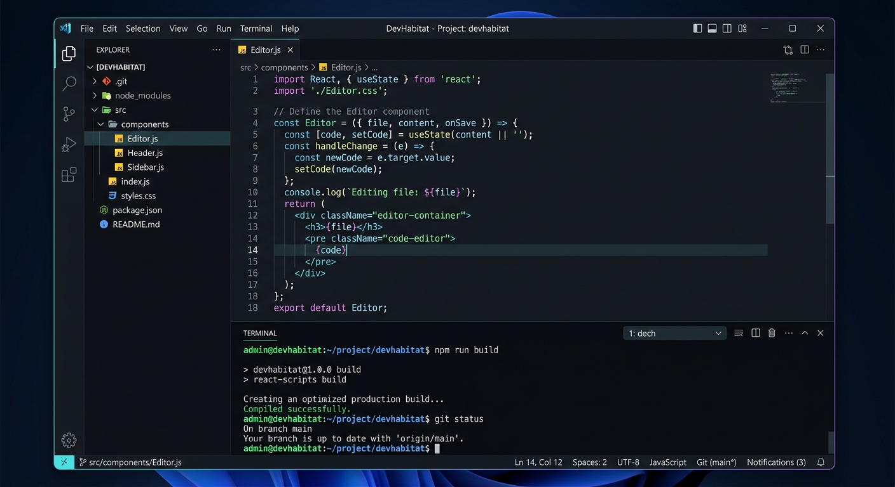

Where code meets craftsmanship.
I'm a full-stack engineer and designer with 4 years of experience building products for startups and enterprises. My work lives at the intersection of performance, aesthetics, and human-centered design.
Born and based in Lagos, Nigeria, I specialize in web applications, Windows desktop software, and MacOS native apps — delivering clean code, beautiful interfaces, and reliable architecture.
When I'm not shipping, I mentor engineering teams, contribute to open-source design systems, and explore generative art. I believe great software isn't just about what it does — it's about how it feels to use.
Independent Engineer
Building web applications, desktop software, and digital products for clients across e-commerce, enterprise, and lifestyle sectors.
Software Development
Full-stack development, UI/UX design, and system architecture for startups and small businesses.
Self-Taught & Continuous
Dedicated to lifelong learning through practice, open-source contribution, and hands-on experimentation.